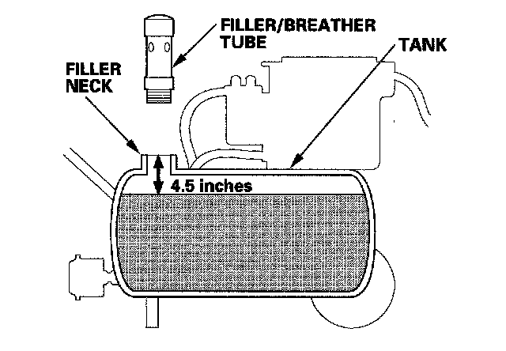
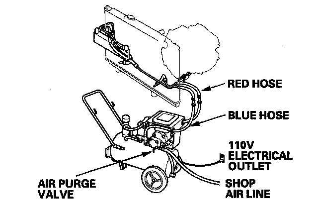
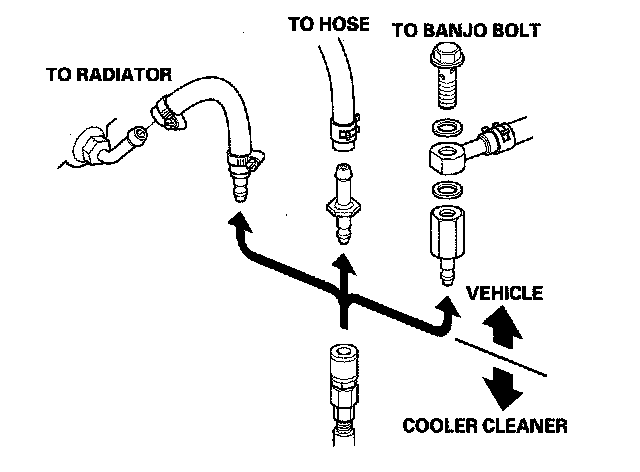
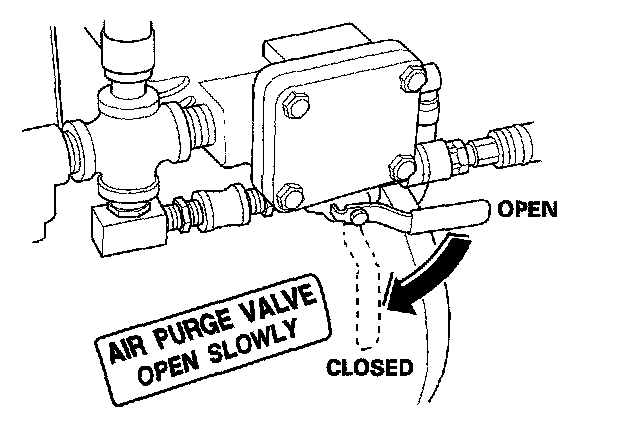
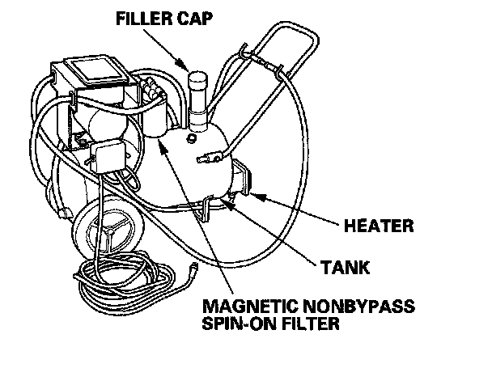

Procedures
ATF Cooler CleaningSpecial Tools Required
^ ATF cooler cleaner GHTTTCF6H
^ Magnetic nonbypass spin-on filter GTHGNBP2
These special tools are available through the American Honda Tool and Equipment Program 1-888-424-6857.
Before installing an overhauled or remanufactured automatic transmission, you must thoroughly clean the ATF cooler to prevent system contamination. Failure to do so could cause a repeat automatic transmission failure.
The cleaning procedure involves heated ATF DW-1 (ATF Z1 has been replaced by ATF DW-1, Honda Service News Nov 2010) delivered under high pressure (100 psi). Check the security of all hoses and connections. Always wear safety glasses or a face shield, along with gloves and protective clothing. If you get ATF in your eyes or on your skin, rinse with water immediately.
WARNING:
^ Improper use of the ATF cooler cleaner can result in burns and other serious injuries.
^ Always wear eye protection and protective clothing, and follow all instructions in this manual.
1. Check the fluid in the cooler cleaner tank. (The fluid level should be 4.5 inches from the top of the filler neck.) Adjust the level if needed; do not overfill. Use only Acura ATF DW-1 (ATF Z1 has been replaced by ATF DW-1, Honda Service News Nov 2010); do not use any additives.

2. Plug the cooler cleaner into a 110 V grounded electrical outlet.
NOTICE: Make sure the outlet has no other appliances (light fixtures, drop lights, extension cords) plugged into it. Also, never plug the cooler cleaner into an extension cord or drop light; you could damage the unit.

3. Flip the HEAT toggle switch to ON; the green indicator above the toggle switch comes on. Wait 1 hour for the cooler cleaner to reach its operating temperature. (The cooler cleaner is ready to use when the temperature gauge reads 140° to 150°F.)
NOTE: If the red indicator above the HEAT toggle switch comes on, the fluid level in the tank is too low for the tank heater to work (see step 1 of this procedure).
4. Select the appropriate pair of fittings, and attach them to the radiator, to the hoses, or to the banjo bolts for flow through the ATF cooler cleaner.

5. Connect the red hose to the cooler outlet line (the line that normally goes to the external filter on the transmission).
6. Connect the blue hose to the cooler inlet line.
7. Connect a shop air hose (regulated to 100 to 125 psi) to the air purge valve.
NOTICE: The quick-connect fitting has a one-way check valve to keep ATF from entering your shop's air system. Do not remove or replace the fitting. Attach the coupler provided with the cooler cleaner to your shop air line if your coupler is not compatible.
8. Flip the MOTOR toggle switch to ON; the green indicator above the toggle switch comes on. Let the pump run for 5 minutes. While the pump is running, open and close the air purge valve periodically to cause agitation and improve the cleaning process. Always open the valve slowly. At the end of the 5-minutes cleaning period, leave the air purge valve open.
NOTE: While the pump is running with the air purge valve open, it is normal to see vapor coming from the filler/breather tube vents.

9. With the air purge valve open, flip the MOTOR toggle switch to OFF; the green indicator goes off. Leave the air purge valve open for at least 15 seconds to purge the lines and hoses of residual ATF, then close the valve.
10. Disconnect the red and blue hoses from the ATF cooler. Now connect the red hose to the cooler inlet line.
11. Now connect the blue hose to the cooler outlet line.
12. Flip the MOTOR toggle switch to ON, and let the pump run for 5 minutes. While the pump is running, open and close the air purge valve periodically. Always open the valve slowly. At the end of the 5-minutes cleaning period, leave the air purge valve open.
NOTE: While the pump is running with the air purge valve open, it is normal to see vapor coming from the filler/breather tube vents.
13. With the air purge valve open, flip the MOTOR toggle switch to OFF. Leave the air purge valve open for at least 15 seconds to purge the lines and hoses of residual ATF, then close the valve.
14. Disconnect the red and blue hoses from the ATF cooler lines.
15. Connect the red and blue hoses to each other.
16. Disconnect the shop air from the air purge valve. Disconnect and stow the coupler if used.
17. Disconnect and stow the fittings from the ATF cooler inlet and outlet lines.
18. Unplug the cooler cleaner from the 110 V outlet.
Tool Maintenance
Follow these instructions to keep the ATF cooler cleaner working properly:
^ Replace the two magnetic nonbypass spin-on filters once a year or when you notice a restriction in the ATF flow.
^ Check the level and condition of the fluid in the tank before each use.
^ Replace the ATF in the tank when it looks dark or dirty.
